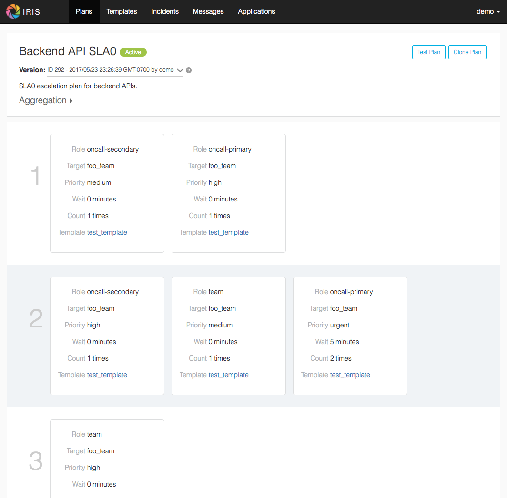

Iris - Escalation System¶
Iris is a highly configurable and flexible service for escalations.
{kind=link}
Iris allows you to easily escalate to individual users and teams in your organizations to notify them of events. Here is a quick summary of its features:
- 100% customizable message format and escalation steps. Eg, reach out to user Foo via email. If they don’t respond after X tries, reach out to their manager.
- Flexible user configurable message batching/reprioritization rules.
- Pluggable command interface for easy service integration.
- Rich third party service provider integration:
- Integration with Gmail. Claim incidents via buttons in your inbox and by replying to emails.
- Supports escalating via SMS and Phone using twilio.
- Integration with Slack for notifications via IM.
- Professionally-designed rich frontend facilitating great usability, to make creating and managing complex escalation plans a breeze.
- High availability, distributed by nature.
At linkedin, we use Iris together with our open-source shift scheduling system Oncall. The combination of the two provide a way to manage on-call schedules and ensure that the person scheduled as on-call at a given time is notified of any issues.